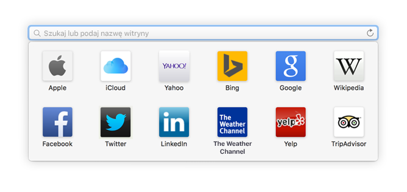
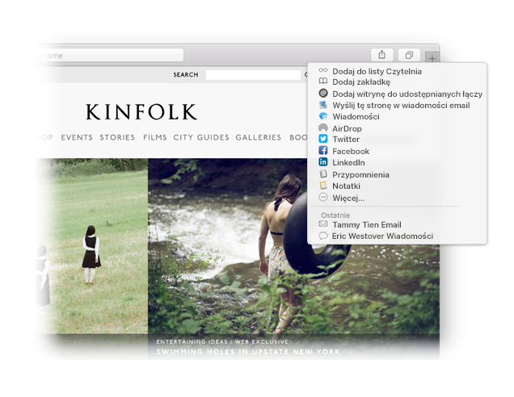

Znajduj ulubione.
Kliknij w pole inteligentnego wyszukiwania, aby odwiedzać swoje ulubione witryny. Kliknij w witrynę, aby do niej przejść.

Przypinaj witryny.
Przeciągnij kartę w lewo, aby przypiąć witrynę i zostawić ją pod ręką na pasku kart.

Udostępniaj łącza.
Kliknij w  , aby wysłać łącze w wiadomości email lub wiadomości tekstowej, udostępnić je na Facebooku lub na Twitterze, albo dodać do programu Notatki.
, aby wysłać łącze w wiadomości email lub wiadomości tekstowej, udostępnić je na Facebooku lub na Twitterze, albo dodać do programu Notatki.